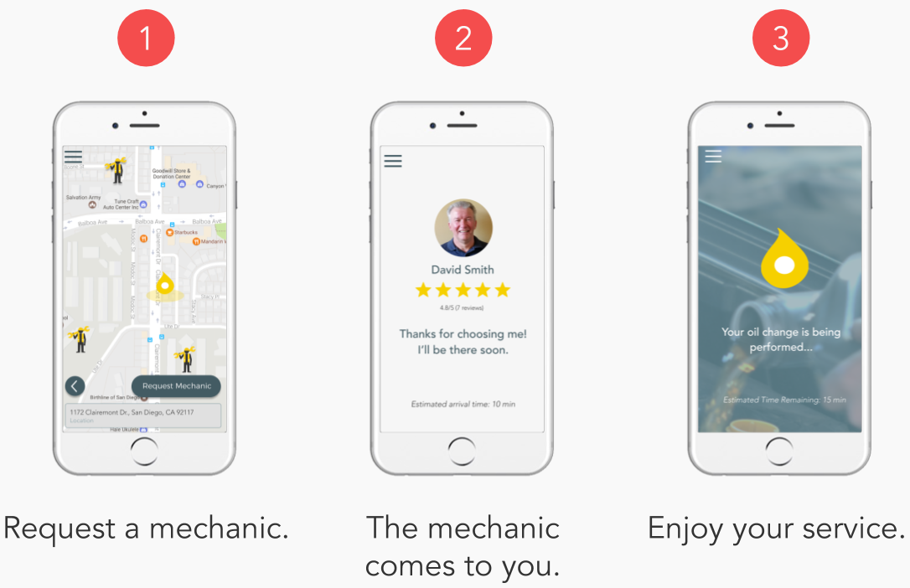

OilGo
SPRING 2017 - PRODUCT DESIGN

Background
OilGo is a mobile oil changing service that brings mechanics to users who are in need of an oil change. OilGo seeks to make people's lives more convenient by working around user's schedules and by simplifying the process of getting an oil change.
OilGo is a business viable startup idea that was designed over a 10 week period for the course Interaction Design Startup. With a team of four, we conducted extensive user research, created a strong branding initiative, ran an ad campaign, and created high fidelity prototypes.
Overview
Role: UX Designer, User Researcher
Time: 10 weeks
Skills: A/B testing, competitive analysis, interviewing, needfinding, pivoting, prototyping, storyboarding
Tools: Figma, Gimp, Google Analytics/Adwords, MarvelApp, Unbounce
Deliverables(links):
OilGo Kickstarter,
OilGo Video Pitch,
OilGo Poster,
OilGo Hi-Fi Prototype

Ideation
Before the idea of mobile oil changes came into fruition, our initial brainstorm landed on two ideas: DIY (do it yourself) and tool rentals. We decided DIY was a strong idea because of its popularity across social media and the increasing number of DIY hobbyists as result. For tool rentals, we noticed that prior existing tool rental services charged absurd amounts for their tools and wanted to know if a more affordable alternative was viable. DIY and tool rentals also overlap each other by nature, so we decided it would be effective to test both ideas simultaneously. Lastly, we wanted to incorporate share economy style features as this has been a popular and successful business model.
Storyboarding
To generate ideas for our storyboards, we began with "how might we" questions and by brainstorming over 50 potential solutions to these questions. We then narrowed these solutions down to 15 and through feedback from instructors and peers, narrowed them down even further to a top 5:
- Finding Tools - Rentals/Borrowing
- Recruiting Laborers for projects
- Recruiting Volunteers that want to learn while helping on projects
- Finding DIY Experts/Mentors
- Finding a Workspace for projects
User Insights
To test our storyboards, we had interviews with DIY hobbyists and laborers and sent out surveys online and in person. Here is what we found:
- People rather borrow tools from friends and family as they most likely have the desired tools at no cost.
- Finding workspaces is not a need for many people, if at all.
- Recruiting laborers and volunteers appealed to homeowners with large home improvement projects, but did not occur to everyone else. The idea also brought up liability and trust issues.
- Finding DIY mentors appealed to both people seeking mentors and people wishing to be mentors. Older, skilled individuals wanted to pass on their knowledge and expertise to passionate en Beginner DIY enthusiasts mostly turn to Google and Youtube to learn their skills, but for more complicated activities, they prefered to have a mentor to teach them.
Although our research led to a service that connects DIY mentors and mentees, how exactly do we make this idea business viable? Our initial pitch relied on web traffic and discounts on materials for mentors and mentees through the use of our service. Feedback from peers and uncertainty from ourselves drove us to try one more idea before putting our resources in a DIY service.
The Pivot
Hovering around the DIY and tool rental space, what idea could we still come up with? What is a potential DIY activity that everyday people could do, but would be more efficient if an expert did it? Oil changes.
Oil changes are a relatively easy DIY activity that anyone with the right tools can do. However, most people do not have these tools and are initimidated by working on such a complicated machine. We decided to frame the service as mobile oil changes that had mechanics come to users to perform the service. We ran a quick survey and found that many people liked the idea because it would be convenient and saved a lot of time. People were surprised that this kind of service was available in the first place, and compared them to mobile pet cleaning or mobile shower services.
Ultimately, we decided to pivot to mobile oil changes because it presents a stronger business model and is accessible to a much larger audience than a DIY mentor-mentee service.
Service Enactments
To test our business idea, we needed to perform service enactments to better understand user needs. Our MVP(minimal viable product) ewas very straightforward: post an ad stating that we will do mobile oil changes at the convenience of your time. We decided to post on a local Facebook group and were met with overwhelming interest.
The mobile oil change service was very well received and feedback from users provided very interesting insights:
- People loved the convenience.
- Many car owners aren't knowledgeable about their own cars, but want to learn.
- People want someone who is reliable and trustworthy
- People want transparency and to know exactly what they are paying for.
- People liked to watch and learn while the mechanic does their work.
Branding
With a strong business idea set, a strong branding initiative must follow. We began building our identity with use of moodboards and keywords. From this basis, we then developed our names, catchphrases, typography, and overall aesthetic.
Ad Campaign
To further develop our business idea and branding, we used UnBounce Pages to test landing pages alongside Google Analytics and Adwords. We wanted to know the extent of interest of our business idea, while also testing for which branding traits were better than others.
We ran our ad campaign twice in the San Diego County, and based on our results, we believed we had a solid idea.
- Google Adwords: over 8600 views, 74 Clicks (.86% Click-Through Rate)
- Unbounce Statistics: 87 unique visitors, 6.90% conversion rate
Business Proposition & Competitive Analysis
For our business model, we plan to connect customers to mechanics. By doing so, we give mechanics another source of income and make the lives of customers more convenient. We will also be doing business with supply vendors to supply our mechanics with all the tools and materials they need.
To our surprise, there are not that many competitors in this field. Our biggest competitor would be Wrench, a mobile mechanic service for any kind of automotive work. Although they also perform mobile oil changes, they are charging much more than what we expect to charge. Other competitors, such as Andy's Mobile Oil Change and Lube n' Go, are small local businesses that do not plan to expand. These services mostly focus on oil changes for fleets of commercial trucks.
Finally, we plan on pricing our oil changes at a flat fee of $55 per service: $25 for oil and filter, and $30 for service. We want our mechanics to be paid well for their time, and is competitive of Wrench's $70 per oil change. We believe this is a solid price for this premium service.
Hi-Fi Prototype
Convenience has been synonymous with mobile phones and decided it would be best if our service was used from a mobile app. After wireframing our pages, we used Figma to prototype the onboarding process and user side interactions. Afterwards, we imported our pages to MarvelApp for testing and presentation. Click here to try out the prototype.
Final Product
Overall, OilGo was the most challenging project I have worked on because it continuously forced me outside my comfort zone and made me develop a whole set of skills. From user research, ad campaigns, business planning, visual design, prototyping, and even working as a team, I felt like this project had it all. I can proudly say that I exceeded my own expectations working on this project and am proud of how well the final product turned out. Please visit the following links to learn more about OilGo and please contact me if there are any questions.
Click here to view our Kickstarter Campaign
Click here to view our video pitch
Click here to view our poster
Click here to try out our prototype